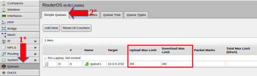
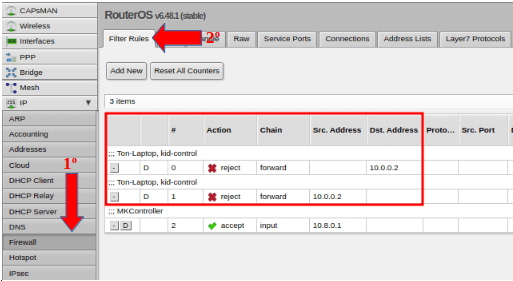

После внесения изменений в настройки Kid-пользователей и принадлежащие им устройства, нужно убедиться, что траффик начал фильтроваться согласно заданным правилам. Как это сделать, в официальной документации, почему-то, не сказано.
Дело осложняется тем, что стандартная поставка роутера MikroTik hAP Lite может содержать баг в фаирволе, из-за которого по-дефолту не прописано правило, заставляющее дропать все пакеты, не прошедшие проверку (не важно, это пакеты под контролем Kid-Control или от чего-то другого). Но это тема будет рассмотрена в какой-нибудь последующей статье.
Далее предполагается, что роутер настроен и работает правильно.
Итак, для проверки правил Kid-Control нужно проверить две подсистемы: Queues (Очереди) и Frewall (Файрвол).
Проверка очередей
Очереди следят за настроками лимитов, заданных для устройств Kid-пользователей. То есть, они следят, например, за скоростью траффика, идущим от или к устройству.
Для проверки очередей, в Web-интерфейсе следует выбрать:
Меню - Queues - Вкладка Simple Queues
Там будут видны правила, которые созданы чтобы ограничить лимиты для Kid-устройства. На приведенной ниже картинке показаны установленные лимиты на скачивание и исходящий траффик, оба равны 2Mbit/s.

Проверка правил фаирвола
Для проверки сгенерированых через Kid-Control правил фаирвола, необходимо выбрать в Web-Интерфейсе:
Меню - IP - Firewall - Вкладка Filter Rules
Ниже показан пример двух правил, которые создал Kid-Control в момент, когда профиль Kid-пользователя был поставлен на паузу (Pause) или когда для пользователя вышло разрешенное время доступа к сети Интернет.

Следует понимать, что reject-правила фильтрации траффика Kid-пользователей появляются динамически. Они исчезают, когда доступ пользователю открыт, и наоборот, добавляются в моменты, когда согласно расписанию (или при установке траффика пользователя на паузу) доступ пользователя в сеть должен быть заблокирован.
Таким образом можно контролировать настройки доступа пользователей - детей или сотрудников - к Интернету. Доступ их устройствам будет ограничен в соответствии с правилами, определенными в подсистеме Kid-Control, что гарантирует безопасность и спокойствие. При необходимости всегда можно изменить данные правила.